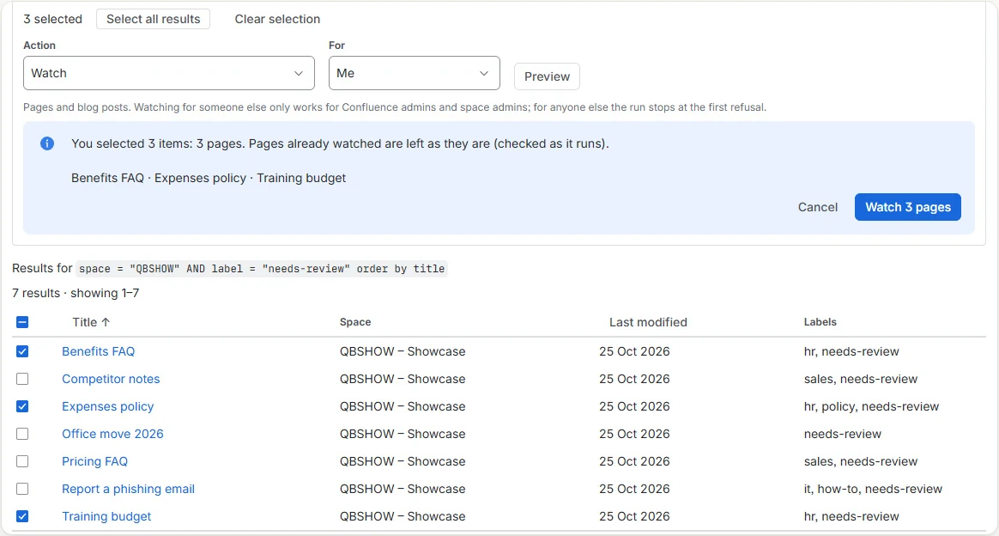

How to stop watching many Confluence pages at once
By default Confluence makes you watch the pages you create and edit, so the list grows quietly. It has a list of everything you watch, but it shows 20 items at a time with a Stop Watching link on each, and no way to select several. To stop watching many pages at once, search for them and use an app that unwatches them all.
With Confluence on its own
- Click your profile picture (top right) and choose Personal settings.
- Open the Watches tab. The Content Watches table lists every page and blog post you watch, with its space.
- Press Stop Watching on each row you no longer want.
Where it falls short
- One at a time, 20 to a page. There are no checkboxes, no select-all, no filter and no search. On our test site one person's list ran to 331 pages of 20.
- No way to pick by space, label or age, such as “everything I watch in an old project space”.
From a search with Query & Bulk Actions
- A Confluence admin installs Query & Bulk Actions; anyone can then open it from the Apps menu.
- Find the pages, for example everything you watch in one space:
watcher = currentUser() AND space = "DOCS", or the pages under a parent page. - Tick the results or press Select all (up to 500), choose Stop watching for Me, and press Preview. Pages you don't watch are left as they are.
- Confirm. Undo these changes watches them again if you change your mind.
Confluence admins and space admins can also choose Someone else to change another person's watching, for example when someone leaves a team. Confluence refuses this for everyone else, and the person isn't notified.

Disclosure: Kitefold makes Query & Bulk Actions, so we're not neutral. Confluence's own Watches list is free and fine for a few pages.
Related guides
Checked against Confluence Cloud in November 2026, on our test site. Confluence changes often; if something here no longer matches what you see, email support@kitefold.app and we'll update it.